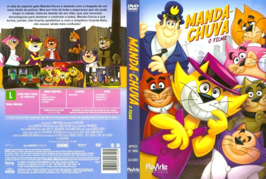

Outro Título:Don Gato y su pandilla
País:Mexico, 90 minutos
Idiomas falados:Espanhol, Português
Gênero(s):Animação, Família, Comédia
Diretor(s):Alberto Mar
Escritor(es):Tim McKeon, Kevin Seccia
Codec:MPEG-2 (DVD)
Número: 5806


Certificado:L
Sinopse:
A vida de Manda-Chuva é abalada por uma nova onda de crimes em Nova York. Quem comanda este cenário é um vilão poderoso, que usa recursos tecnológicos para dominar a cidade. O Guarda Belo anda preocupado porque seu chefe está insatisfeito com sua atuação e pede providências urgentes. Manda-Chuva e sua turma estão prontos a ajudar e, claro, também a atrapalhar no meio disso tudo.
Elenco:
Tipo de mídia: DVD5,
Legendas: Português, Sem Legendas
Alugado: Não
Tela: Anamorphic Widescreen